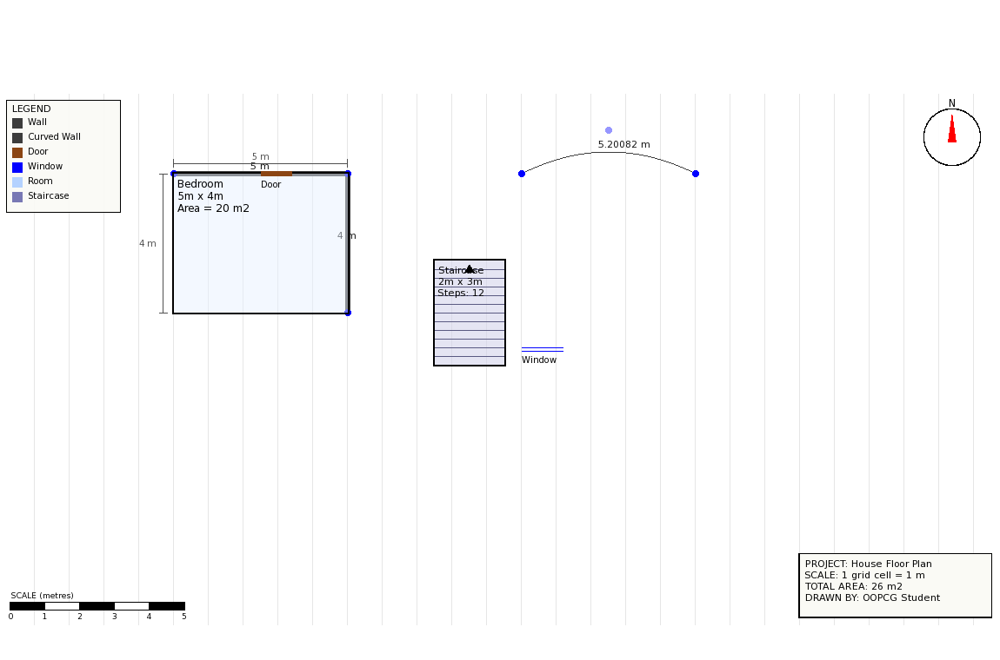

Features
- Straight walls (with real wall thickness) and curved walls (quadratic Bézier curves)
- Rooms — Bedroom, Living Room, Kitchen, Bathroom — placed by click-drag, with live width/height/area
- A staircase object with automatically generated steps and an "up" arrow
- Doors and windows with simple architectural symbols
- Dimension lines showing the length of every side of a room
- A north compass, a printed scale bar, a title block and a symbol legend — the standard furniture of a real civil/architectural drawing sheet
- Select, move and delete any object; Undo the last action; Export the plan as a PNG image plus a text dimension report
- Live total house area, shown at all times in the status bar
Built with
SFML 3 for 2D rendering and input, and plain C++17 — chosen because it exposes raw 2D drawing primitives and coordinate math instead of hiding them, which is exactly what an OOPCG project needs to demonstrate.
Run it yourself
See README.md in the repository for full build instructions (CMake + SFML 3, Windows/Linux/macOS).